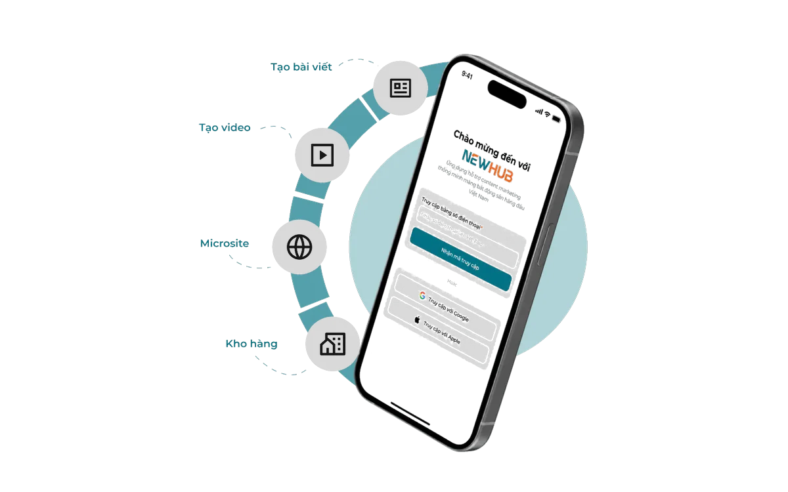

PropGate · 2026
NewHub
LLM assistant built on Vertex AI that generates real-estate marketing posts. Shipped end‑to‑end across web and mobile.

<30s
to generate a marketing post
2×
faster mobile delivery with the Expo + Lark CI/CD pipeline I built